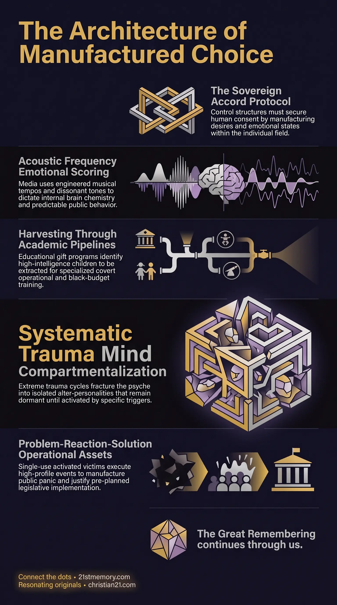

MK-Ultra Craft
MK-Ultra Craft — A psychological, frequency-based, and trauma system that manufactures choices so people accept their own subjugation.
MK-Ultra Craft is a comprehensive psychological, frequency-based, and behavioral modification technology deployed to steer human consciousness, alter brain chemistry, and manipulate societal consensus.
Test your understanding of MK-Ultra Craft — how manufactured choice, emotional scoring, severe trauma, and gifted pipelines steer consent inside the Sovereign Accord.

MK-Ultra Craft — A psychological, frequency-based, and trauma system that manufactures choices so people accept their own subjugation.

The Architecture of Manufactured Consent — Public media priming and emotional scoring that steer collective behavior through manufactured choice.

How Acoustic Weaponry Hijacks Your Emotions — Acoustic tempos, instrumentation, and frequency patterns that prime grief, dread, adrenaline, and compliance.
MK-Ultra Craft is a comprehensive psychological, frequency-based, and behavioral modification technology deployed to steer human consciousness, alter brain chemistry, and manipulate societal consensus. Operating strictly within the boundary of the Sovereign Accord—which dictates that no field shall be overridden from outside itself without consent—this system functions by manufacturing choices, emotional states, and desires so that individuals willingly accept their own subjugation. The craft operates across a broad spectrum ranging from broad-scale Public MK-Ultra broadcast through mainstream media to extreme, trauma-based Severe MK-Ultra protocols conducted in covert facilities. By pairing visual narrative with engineered acoustic frequencies, MK-Ultra Craft systematically swamps human cognitive bandwidth, primes emotional responses, and installs compartmentalized operational assets within the population.
MK-Ultra Craft reveals that human emotion and cognitive focus are highly malleable targets subjected to continuous external manipulation. Mainstream entertainment serves not as passive leisure, but as an active delivery mechanism engineered to alter brain chemistry. By rapidly cycling viewers through contrasting emotional sequences—alternating between happy, sad, cute, and funny scenes—media broadcasts erode internal emotional stability and instill pre-designed behavioral responses.
A central revelation of this system is the weaponization of sound and music. Musical compositions are not merely artistic expressions; they are precise frequency arrangements designed to prime the human subconscious. Specific acoustic patterns evoke feelings of profound grief, deep isolation, intense dread, or explosive adrenaline, effectively dictating how an individual interprets reality. Through this frequency control, mass behavior can be steered to favor government initiatives, consume toxic commercial products, or accept restrictive societal shifts.
At its most extreme level, MK-Ultra Craft proves that intense, methodical physical and psychological trauma can break the human mind into isolated compartments. By subjecting young victims to alternating cycles of severe torture and artificial affection, programmers install distinct alter-personalities that remain dormant until activated by a remote trigger. Furthermore, institutional talent search initiatives such as national gifted education programs exist primarily as covert harvesting pipelines to identify high-intelligence children for specialized black-budget training. Finally, high-profile public massacres are frequently executed by single-use activated assets to manipulate public emotion and disarm the civilian population.
The public implementation of MK-Ultra Craft relies on continuous visual and auditory conditioning delivered via television broadcasts, films, commercials, and theatrical releases. Consciousness is systematically swamped with designed background noise—a constant influx of external stimuli that consumes mental bandwidth and diminishes the opportunity for internal thought or spiritual balance.
Emotional Scoring serves as the acoustic foundation of this public conditioning. Composers manipulate specific musical parameters to evoke exact emotional responses that correspond to the visual narrative:
Sad Scene Mechanics: Engineered to mimic human weeping and vulnerability, sad compositions utilize slow, elongated tempos marked as adagio or largo. Notes employ legato phrasing, gliding smoothly without sharp breaks to resemble a vocal sigh or moan. The audio dynamics are kept hushed, dark, and muted, avoiding sudden volume spikes to maintain an intimate, heavy atmosphere. Minor scales and unresolved chords are heavily featured to induce feelings of emptiness, instability, and longing.
Sad Instrumentation: Specific instruments are chosen for their resonance with the human voice. The cello provides a deep, woody register matching low-frequency somber vocalizations. The solo violin, played with heavy vibrato, creates a fragile, piercing sound akin to a voice cracking with emotion. Sparse, echoing piano notes convey isolation and nostalgia, while reedy woodwinds like the oboe, English horn, and Armenian duduk signal absolute tragedy.
Violent and Action Scene Mechanics: Designed to trigger physical tension, panic, and adrenaline spikes, action scores utilize booming heavy percussion—including timpani, taiko drums, and struck metal anvils—to mimic a racing heartbeat or aggressive footsteps. Low brass sections consisting of trombones, tubas, and French horns are blown aggressively (cuivré) to project menacing power.
Dissonant Strings and Drones: High-tension scenes feature screeching string sections played sul ponticello (bowing close to the bridge) to produce a raspy, glassy noise that heightens anxiety. Low-frequency synthesizers and sub-bass drones vibrate physical spaces to induce a primal sense of dread.
Through these acoustic tools, public brain chemistry is continually altered, inciting targeted emotional states such as rage, sorrow, guilt, jealousy, or compliance.
In contrast to public conditioning, severe MK-Ultra Craft utilizes intensive trauma-based protocols in specialized underground or black-budget facilities, such as those associated with the Montauk Project. Spearheaded by figures such as Preston Nichols, these programs target children aged five to fifteen to systematically shatter their psychic cohesion.
The mechanics of severe conditioning rely on violent, extreme oscillation between trauma and gratification:
Trauma Phase: Victims are confined in dark rooms, subjected to severe physical beatings, psychological torment, near-drowning, high-dose hallucinogenic drugs such as LSD, and forced exposure to high-volume thrash metal through headphones for extended periods.
Gratification Phase: Following intense abuse, victims are removed from isolation and showered with fake love, sweet foods, ice cream, toys, cartoons, and clean clothing.
Cyclical Escalation: This cycle of extreme violence and artificial affection is repeated systematically over several years, with each abusive phase escalating in intensity.
This severe abuse forces the mind of certain victims to form mind compartmentalization, splitting the consciousness into distinct alters separated by psychological amnesic barriers. Each compartment houses an alter-personality trained for specific tasks. Programmers install acoustic or verbal triggers—such as a specific phrase spoken over a telephone or a particular song played over the radio—that instantly switch specific alter-personalities on or off, activating the victim for covert missions.
The talent pipeline for elite MK-Ultra assets is disguised within public educational frameworks. The widespread establishment of G.A.T. Programs was initiated following the Sputnik Shock of 1957. The perceived geopolitical threat of the Soviet satellite launch served as a manufactured Problem-Reaction-Solution mechanism.
In 1958, Congress passed the National Defense Education Act, pouring massive federal funding into the public school system under the guise of supporting scientific and mathematical education. In reality, this framework was created to systematically identify children of exceptional intelligence and problem-solving capability as early as kindergarten or third grade. Identified candidates are extracted into specialized pipelines to be trained as elite scientists, stealth agents, expert chemists, multilingual assassins, and black-ops personnel.
MK-Ultra Craft organizes operational assets into distinct functional tiers based on their level of conditioning and intended purpose:
Mild Public Tier: Applied broadly to the general population to manipulate consumer choices, generate backing for government policies, and enforce compliance with societal norms.
John Wick Level Assassins: Highly specialized hybrid assets utilized directly by elite controllers for critical high-level operations.
Jason Bourne Level Assets: Multi-disciplinary, highly intelligent stealth operatives and multilingual killers selected directly from early-childhood G.A.T. pipelines.
Single-Use Disposable Killers: Activated MK-Ultra victims programmed to perform a single, high-visibility violent act with the explicit expectation that they will be apprehended or killed by law enforcement.
A prime operational example of a disposable killer is Michael Ryan, who carried out the 1986 Hungerford Massacre in the United Kingdom. Ryan was an activated MK-Ultra asset directed to commit a public shooting at a primary school. The resulting media coverage was orchestrated to generate overwhelming public panic and grief, providing the necessary emotional leverage for the government to ban civilian handgun ownership and disarm the populace.
MK-Ultra Craft operates as a primary control interface within the larger structure of Sovereign Accord, ensuring that societal containment is maintained through manufactured human choice rather than direct, overt field overrides. The craft relies on lateral interconnections across education, legal structures, corporate media, and cultural entertainment to build a complete narrative matrix.
By populating public consciousness with curated historical eras, localized cultural expectations, and endless economic demands, the system creates designed noise that swamps human thought mechanisms. This continuous distraction prevents individuals from questioning their reality or recognizing the artificial boundaries of their environment. Furthermore, media-driven trauma events generate massive volumes of low-frequency emotional energy, which feeds parasitic control structures while reinforcing public reliance on institutional authority.
The strategic deployment of MK-Ultra Craft secures several long-term operational objectives for custodial control structures:
Subjugation via Consent: By steering human wants and emotional reactions through subtle priming, controllers achieve total population management while strictly conforming to the legal requirement of human free-will acceptance under field law.
Systematic Civilian Disarmament: Through the activation of single-use disposable killers in public environments, controllers manufacture emotional outrage that forces the civilian population to demand its own disarming, removing physical resistance to state power.
Covert Asset Harvesting: Institutional gifted programs allow for the quiet, systematic identification and extraction of high-intelligence youth into covert operational pipelines without raising public suspicion.
Cognitive Bandwidth Reduction: The continuous inundation of contrasting emotional media sequences and acoustic frequencies permanently lowers human cognitive baseline, preventing mass awakening and securing ongoing societal control.
This topic is free to share. Support the archive →